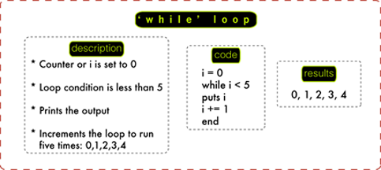
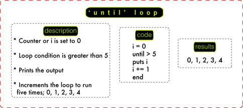
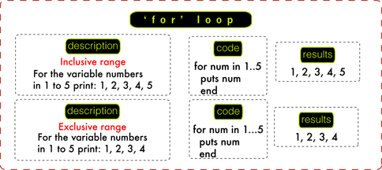
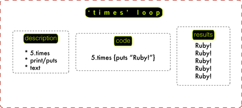

One Infinite Loop
I chose looping because at times it is my best friend and at times it drives me crazy. So I'm hoping writing about it will alleviate my troubles I have with loops or often in my case break infinite loops. Before I begin to talk about loops, here is a very brief description of how ruby works. Everything in ruby is an object, and to make the objects do some task, so you need the tell the objects what the task is, when the objects follows up on the task, they produce results. The results are the output of what you wanted the objec to do. You use the result to to do other tasks. Some examples of objects are integers, texts, strings, arrays and hashes.
Why loop? Often you will need the computer to do the same things over and over and computers are very good at repeating the same tasks. But you also need to tell them when to stop or they will forever do the same thing. Using loops, you can repeat a task and also tell it when to stop. There are many ways to loop a task. In this post I will cover the "while", "until", "until" and the "times" loops.
'while' loop: "while" loop is used when you do not know how many times you want to loop. For example if you are asking the user the 16 digit card number and they are mistakenly entering 14 of the 16 numbers, the request for the card number will keep looping until the user enters all 16 digits. "while" loops will run till the condition you set is met or is true. Once the condition is met, it will terminate or stop looping. In this example, the loop prints out numbers from 0 to 4. The counter is set to 0 and the increment is set to +1. When the loop runs its first cycle, it looks at the counter. The counter is set to 0, and so it prints 0. The second cycle starts and 1 is added to the counter. The loop prints 1. This continues till the condition is true. In this case after it prints 4, the condition is met or is true. The loop stops because any number greater than 4 is false.
'until' loop: "until" loop is a backward of "while" loop. It runs as long as the condition is false and once the condition is true it stops. I personally stay away from this loop as it is little too confusing sometimes. In this example, the loop prints out numbers from 0 to 4. The counter is set to 0. But the big difference here is the condition is set to greater than 4. So like the "while" loop, it will print 0,1,2,3,4 and stop because when it hits five, at five condition becomes true.
'for' loop: "until" loop is used when you know the number of times you want a loop to run. "for" loop code includes an inclusive and exclusive range. For example if there are two periods between the range of numbers (1..5), it prints 1, 2, 3, 4, 5. This is inclusive. If there are three periods between the ranges(1...5), it prints 1, 2, 3, 4. This is exclusive. This loop can be used when you need to run task set between a range. 
'times' loop: "times" loop is similar to "for" loop, but it is a more compact "for" loop. It is used to perform a task on the specified number of times. The code for command "times" loop is easily readable. The example below explains how the "times" loop works.
